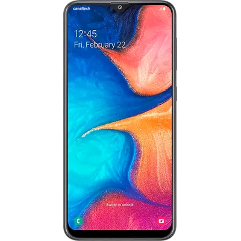
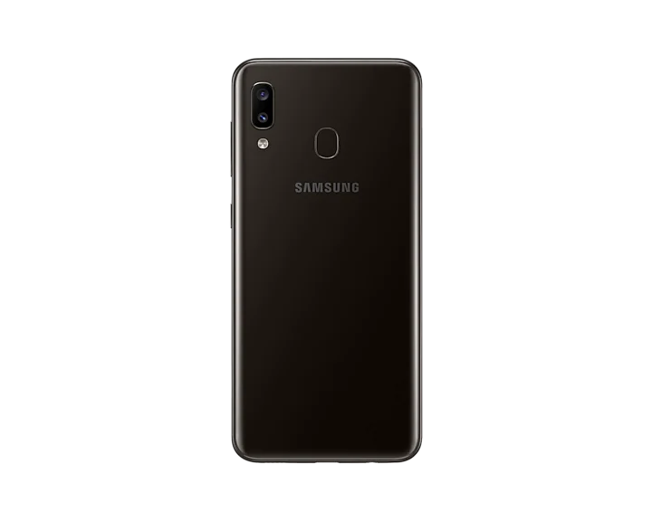

O Galaxy A20 é um modelo intermediário de entrada, mas que tem o grande diferencial de trazer uma tela com a tecnologia Super AMOLED da Samsung, ainda que com uma resolução mais baixa (HD+). Mesmo assim, vem com uma qualidade bem acima da média para o segmento. Outro destaque deste aparelho é sua bateria, que conta com 4.000 mAh. Capacidade mais do que suficiente para chegar até o final do dia e, dependendo do seu uso, consegue ficar até dois dias fora da tomada com folga. Seu chipset Exynos 7884 é um processador competente, porém sem grande performance. Apesar de possuir pouca memória interna (32 GB), o Galaxy A20 possui compatibilidade para cartões MicroSD, podendo expandir seu armazenamento para até 1 TB. Com só 3 GB de RAM, já começa a faltar fôlego para rodar os principais aplicativos mais modernos. Dessa forma, o celular da Samsung se encaixa muito bem no segmento, com alguns diferenciais que, se fizerem sentido para o seu uso, é uma escolha segura.
 